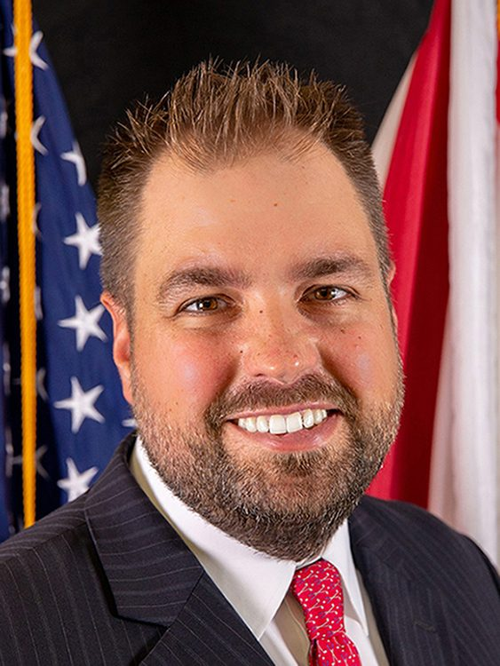
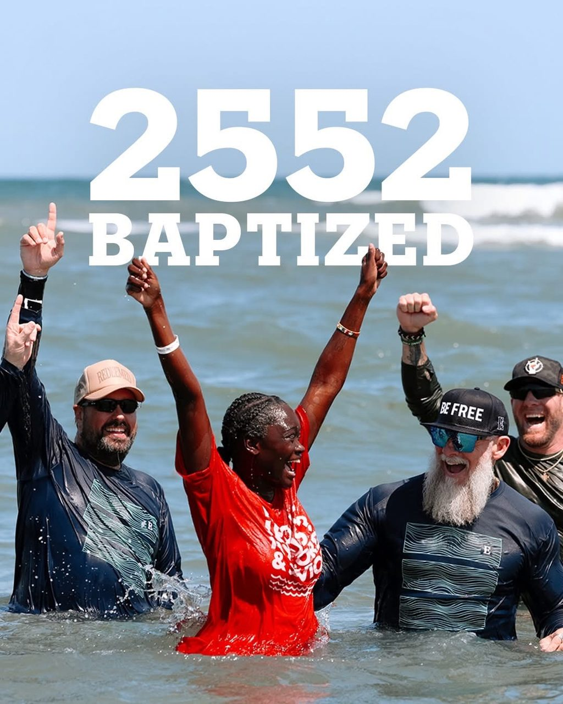
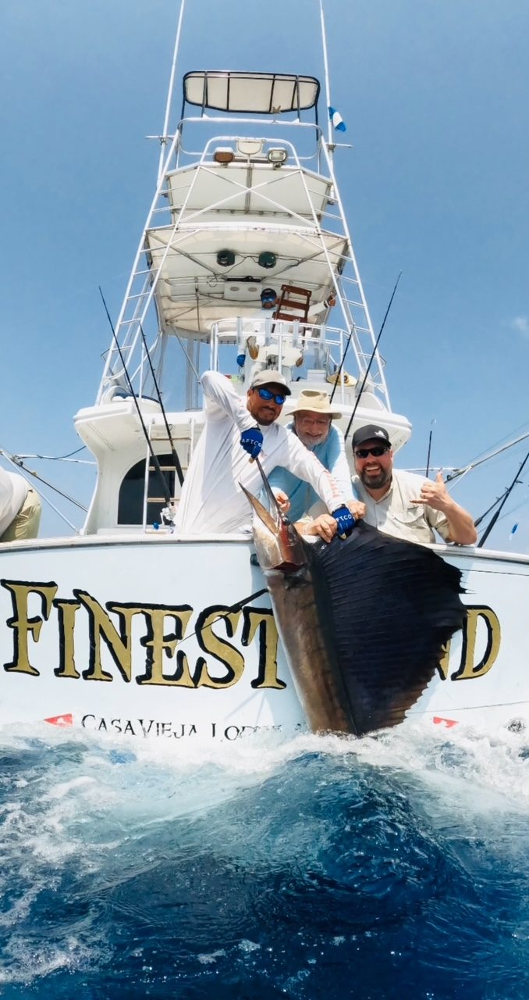

About Erik
When I think of where the Lord found me, what He has done for me and what He has allowed me to be a part of, I am in complete awe of His grace, goodness and faithfulness! It is my hope and prayer that these words and pages both honor and glorify the Lord!
Erik Dellenback is a husband and father who lives in St. Augustine, Florida. He is the Chief Executive Officer of Florida Family Voice and an ordained pastor at The Church of Eleven22. Before that he spent nearly six years in the Executive Office of the Governor as Florida’s first Governor’s Liaison for Faith and Community, several years forming For Others with Chris Tomlin, nearly seven years as the founding president of the Tim Tebow Foundation, and eleven years with the Gator Bowl Association.
Some things I love
-
The Lord
The Lord isn’t just #1 on my list; He is the very paper my list is written on, permeating every area of my life.
-

The Church
I love my church, The Church of Eleven22, but I also love the whole capital C Church around the world.
-
My family
God has blessed me beyond reason with an incredible wife and 5 absolutely awesome kids.
-

The outdoors
I love being out in God’s creation. Whether it’s hunting, deep sea fishing or even the occasional python hunt, I love it all.
For the full career and experiences: Career.
Full bio
Erik Dellenback’s vocational background includes roles as a business and nonprofit executive, college professor, speaker, entrepreneur and movie producer.
Erik started his professional career in college athletics, first with the University of Florida Athletic Association and then with the Gator Bowl Association. He got his first big break in 2004, being selected as the founding Director of the ACC Championship when the ACC expanded to 12 teams. He finished his time with the Gator Bowl Association as the Chief Marketing Officer and Vice President.
He went on to be the founding President and Executive Director of the Tim Tebow Foundation, where he got to work closely with Tim Tebow for nearly 7 years on many things including speaking engagements, marketing, business building, movie production and more. During his tenure at the Foundation, he launched numerous domestic and international ministry programs, including the globally recognized Night to Shine, a prom night experience for individuals with special needs. The event has grown into a worldwide movement held in all 50 states and 24 countries, representing over 32 denominations of the Christian church.
When Erik stepped away from the Tim Tebow Foundation to spend more time with his family, he spent the next 5 years first as a founding board member and then as interim CEO and President of For Others, a nation-leading nonprofit started by Christian musician Chris Tomlin, addressing the foster care crisis in the United States.
When Governor DeSantis was elected in Florida, he wanted to make faith a priority in the state and asked Erik to be part of his leadership team in the Executive Office of the Governor. Erik would go on to serve for nearly 6 years as the state’s first ever Governor’s Liaison for Faith and Community, including leading with Governor DeSantis through Covid. Erik would also create and launch the Governor’s Faith and Community Initiative Office. In 6 years, under his leadership, Florida became the most faith and community-friendly state in the nation, with more than 2,200 faith institutions and 5,600 nonprofit partners mobilized to serve the most vulnerable.
Erik now serves as a national consultant and the Chief Executive Officer of Florida Family Voice, which for more than 20 years has been Florida’s premier defender of Life, Marriage, Family and Religious Liberty. He also is an ordained pastor with The Church of Eleven22, working as Pastor of Ministry Partnerships.
He has been an executive producer on two theatrical films and owned several restaurants: an Auntie Anne’s and Planet Smoothie storefront in St. Augustine, a food truck across Northeast Florida, and a Joey’s Custard on Sanibel Island until Hurricane Ian closed it.
He is a graduate of the University of Florida, an Eagle Scout and a member of Florida Blue Key. He and his wife, Elizabeth, reside in Florida with their five children. He would prefer simply to be remembered as a husband, father, and follower of Jesus.
For programs and press: download a headshot.

Every one of these has a story
Invite Erik to speak